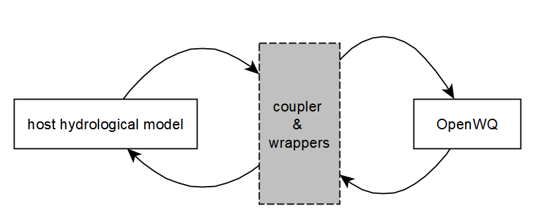

Overview
OpenWQ was specifically designed to promote flexible collaboration between modellers, scientists and stakeholders in the design and implementation of biogeochemical reaction networks (easily customizable via rich JSON-based files) in existing hydrological, hydrodynamic and groundwater models (1D to 3D models). The model is written in C++ and benefits from the powerful Armadillo template-based CC library for linear algebra (Sanderson and Curtin, 2016) that enables the use of modern, flexible, efficient and compact data structures.
The OpenWQ system stems from previous models developed by Environment and Climate Change Canada and the University of Saskatchewan, particularly CRHM-WQ (Cold Regions Hydrological Model - Water Quality) that extends the original CRHM platform (hydrology) model to nitrogen and phosphorus simulations, the WINTRA framework, the multiphase multilayer PULSE snow hydrochemistry model, and the FLUXOS-OVERLAND model for watershed hydrodynamic-water quality simulations suitable for Prairie regions.
Our vision is to provide a customizable, multi-scale, multi-chemistry modelling framework suitable for flexible model hypothesis testing and uncertainty analysis. This is extremely important in a time of great climate uncertainty.
OpenWQ does not run standalone. It runs coupled to existing hydro-models, which makes it ideal for scientists and engineers that want to enable biogeochemical modelling capabilities in their preferred modelling systems. OpenWQ has has been coupled to several models. Explore the Existing couplings section and learn how OpenWQ can be coupled to your model.
Contact us if you’re wondering if OpenWQ could be useful to your research.